No somos un caso aislado
El alcalde suplente de Cuautla, Salvador Molina, dijo que el cierre de negocios “ya es más aislado”, que “si cierra uno al mes”. Los registros oficiales cuentan otra cosa: el INEGI registra 1,604 negocios menos, uno de cada diez; los Censos Económicos, 2,548 empleos menos; la CNBV, casi la mitad de los comercios con terminal perdidos en cinco años. El mismo día prometió 700 cámaras más, cuando el secretario de Seguridad del estado contó 177 instaladas y apenas cuatro funcionando. La columna lee el patrón con Diane Vaughan y la normalización de la desviación, con las cuentas públicas de tres alcaldes a la vista.
El 9 de noviembre, a pregunta expresa sobre los negocios que cierran en Cuautla, el presidente municipal suplente, Salvador Molina, respondió: "Sí, ya es más aislado". Enseguida añadió: "si cierra uno al mes, le estamos pidiendo apoyo". Un día antes, después de siete años de operar, La Hija de la Guayaba había anunciado su cierre definitivo. Su dueña le contestó en público con la frase que da título a esta columna: "No señor, no somos un caso aislado".
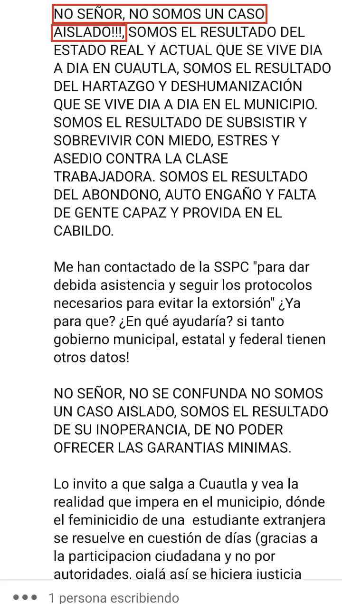
La socióloga Diane Vaughan dedicó años a estudiar la explosión del transbordador Challenger, en 1986, y llegó a una conclusión que sigue vigente: el desastre no nació de una decisión temeraria, sino de una costumbre. Los ingenieros vieron fallar los sellos de los propulsores en vuelos anteriores, y cada falla se archivó como una excepción aceptable. Vaughan llamó a ese mecanismo normalización de la desviación: cuando la anomalía se repite sin consecuencia inmediata, deja de leerse como alarma y se vuelve parte del paisaje.
"Uno al mes" es exactamente eso, una forma de contar que convierte cada cortina abajo en excepción. Los registros oficiales cuentan otra cosa.
El Directorio Estadístico Nacional de Unidades Económicas del INEGI registraba 15,704 negocios en Cuautla en mayo de 2024 y 14,100 en abril de 2026, ya con la actualización de los Censos Económicos: 1,604 menos, uno de cada diez. En el mismo lapso, el resto de Morelos creció 2.9%. Repartido en los cerca de cinco años que separan los censos de 2019 y 2024, ese saldo equivale a unos 27 negocios al mes, no a uno.
Los Censos Económicos llegan al mismo lugar por otra vía. Entre 2018 y 2023, las unidades económicas de Cuautla cayeron 6.8%, mientras Jiutepec crecía 14.5% y Yecapixtla 14.4%. El personal ocupado pasó de 45,423 a 42,875 personas: 2,548 empleos menos en esos negocios. La Comisión Nacional Bancaria y de Valores, que mide algo distinto, coincide con ambos: entre marzo de 2021 y marzo de 2026, los establecimientos de Cuautla que cobraban con terminal punto de venta bajaron de 1,843 a 1,005, una caída de 45%, contra 28% en el resto del estado.
Conviene decir también lo que estos números no prueban. Ninguno mide cierres uno por uno, ni separa al negocio que se fue por la extorsión del que cerró por una mala racha, la competencia o un cambio de giro. El directorio trae además un salto propio de la actualización censal, mientras la caída de terminales ocurrió en todo Morelos, aunque en Cuautla con casi el doble de intensidad. Lo que sí descartan las cuatro fuentes es la escala: ninguna es compatible con "uno al mes". Tampoco es pasado. Según los registros del IMSS, los patrones con un solo trabajador en Cuautla pasaron de 474 a 383 entre septiembre de 2024 y septiembre de 2026, casi uno de cada cinco.
La dueña del restaurante explicó en su mensaje por qué un cierre nunca es uno solo. Según su relato, incendiaron la tortillería que la abastecía, extorsionaron a la cremería donde compraba, balearon los negocios de carne de sus proveedores, y sus vecinos de las flores se fueron "por el famoso cobro de piso". Hoy, escribió, cuatro familias se quedaron sin sustento.
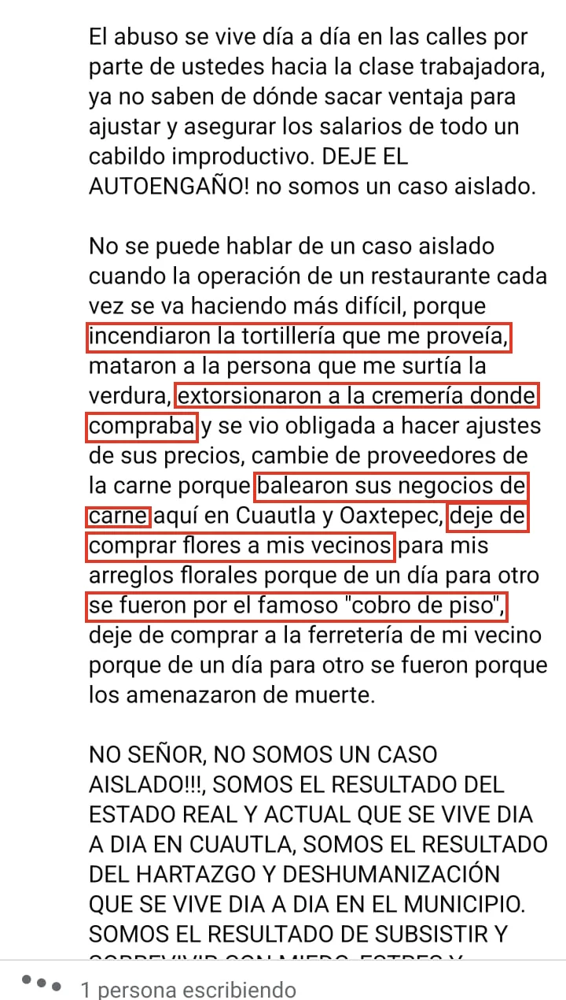
El mismo día que llamó aislados a los cierres, el alcalde prometió "setecientas cámaras y dos mil botones de seguridad". La promesa tiene historia. En su Segundo Informe de Gobierno, en 2023, Rodrigo Arredondo anunció que el municipio contaría con 142 cámaras. En noviembre de 2025, la administración de Jesús Corona informó que operaban 184, y en marzo de 2026 fijó la meta de 500 para este año. Si a esa meta se suman las 700 de Molina, Cuautla debería cerrar 2026 con unas 1,200 cámaras.
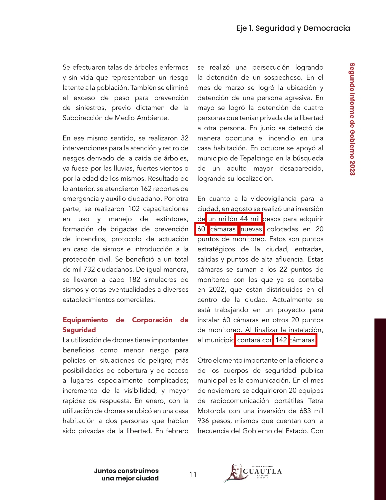
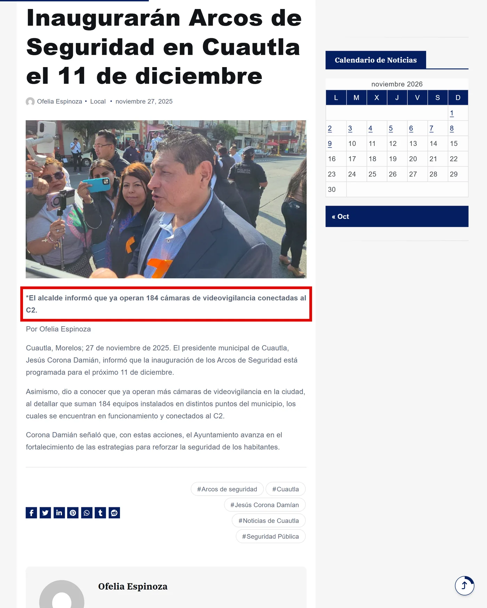
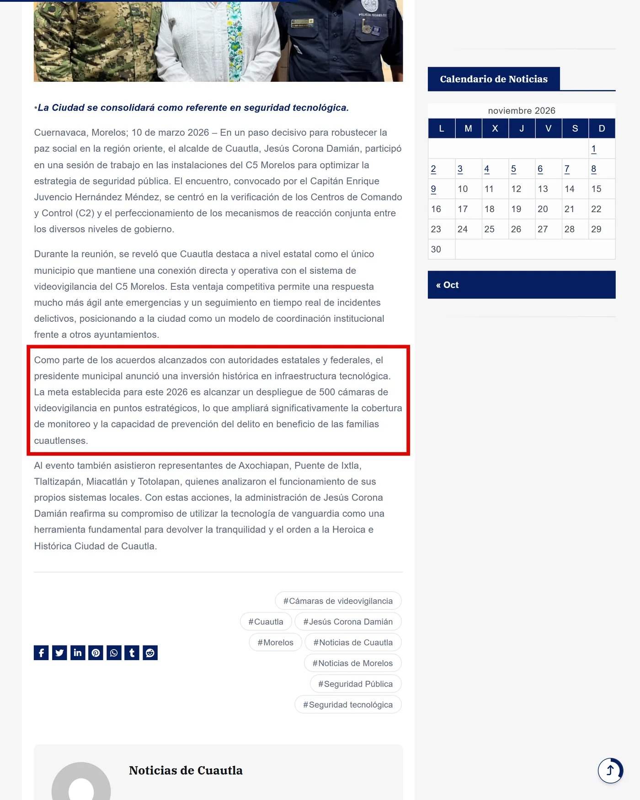
Las cámaras se quedaron; lo que no se quedó fue el mantenimiento.
La única vez que alguien las contó, el resultado fue otro. El 7 de agosto de 2025, en entrevista con Milenio, el secretario de Seguridad y Protección Ciudadana del estado, Miguel Ángel Urrutia Lozano, relató que al tomar el control del C2 de Cuautla, tras el convenio firmado el 24 de julio con el ayuntamiento, encontró 177 cámaras instaladas y apenas cuatro funcionando: "no puede ser posible que una ciudad tan importante solamente tuviera cuatro cámaras funcionando de 177". Arredondo había dejado el cargo siete meses antes. Las cámaras se quedaron; lo que no se quedó fue el mantenimiento.
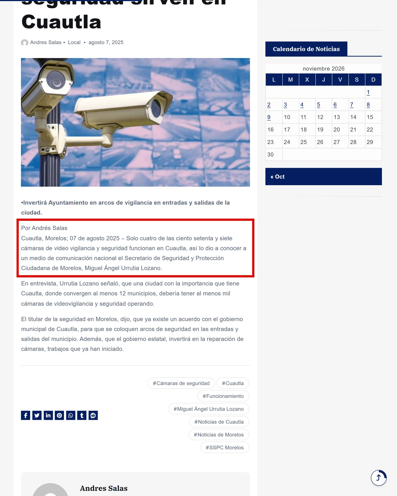
El dinero tampoco aclara el panorama. En abril de 2024, Arredondo presumió 40 millones de pesos invertidos en el combate al crimen, con cámaras en la lista. Su cuenta pública registra en la partida de Equipo de defensa y seguridad 2.6 millones en tres años: 1,044,000 pesos en 2022, 1,566,000 en 2023 y 19,174.80 en 2024. En 2025, esa misma partida devengó 25.4 millones, que el inventario municipal anota como un solo bien de un solo proveedor: cuatro arcos, equipo de un quinto automatizado y la modernización del C2, sin desglose de piezas. Para 2026, el presupuesto le asigna 21.1 millones; el reporte de enero a marzo no trae renglón de esa partida. Esta casa ya lo había documentado en "El inventario": siete cifras oficiales distintas de cuántas cámaras tiene Cuautla, y ninguna coincide con otra.
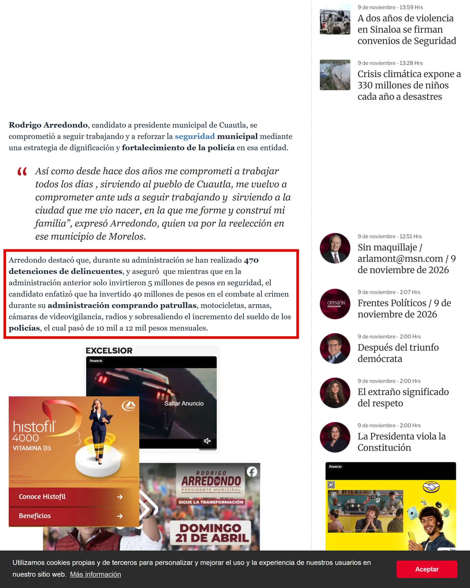
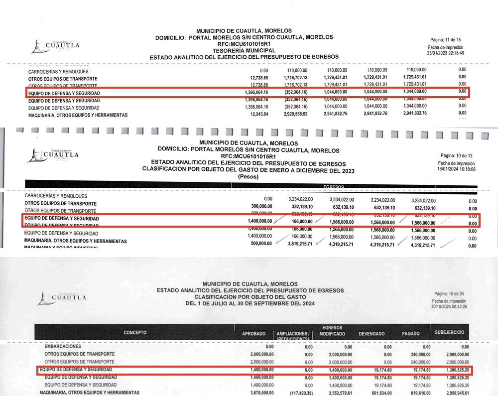
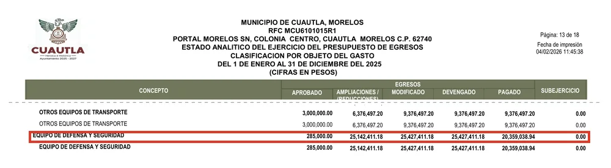
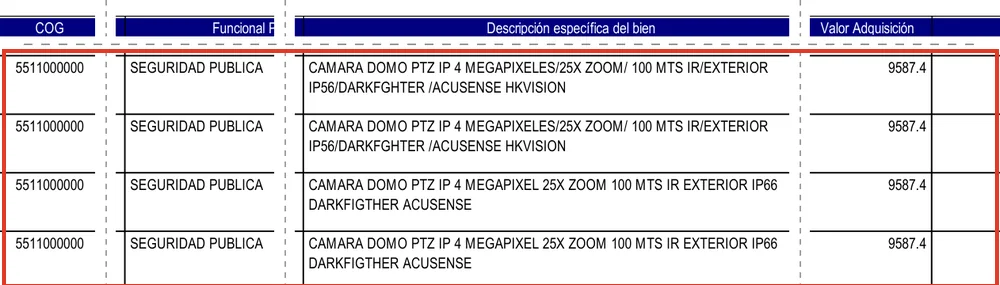
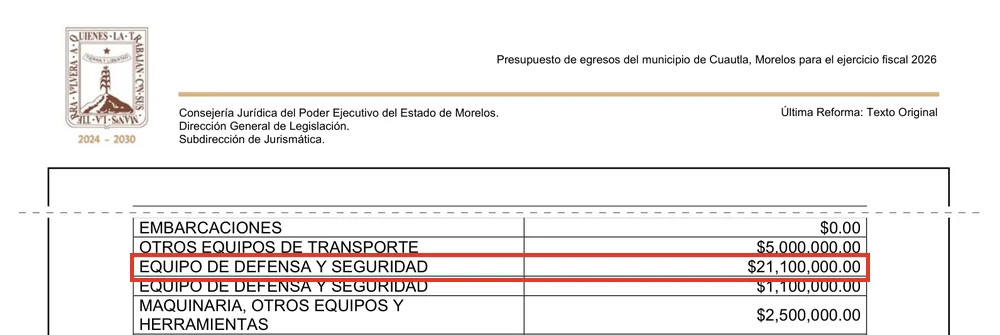
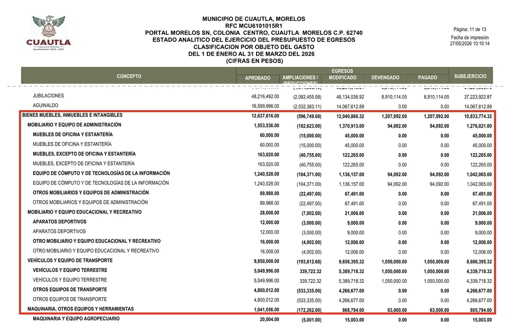
No sostengo que alguien haya hecho negocio con esas compras; los documentos no lo dicen y no me corresponde afirmarlo. Lo que muestran es un patrón. Cada alcalde anuncia cámaras nuevas, ninguno publica cuántas sirven ni dónde están, y en esos mismos años el municipio perdió más de 1,600 negocios. Al comerciante formal, el ayuntamiento le cobra licencia y refrendo cada año. Las cámaras, en cambio, no tienen quien les pase lista en público: el portal de transparencia no publica su inventario, su ubicación ni su estado. ¿Por qué una cuenta se exige y la otra no?
Vaughan advertía que la normalización de la desviación no la produce un individuo descuidado, sino una organización que aprende a convivir con la falla. Visto así, Cuautla no tiene un problema de cierres aislados ni de cámaras descompuestas: tiene autoridades que hace tiempo dejaron de leer ambas cosas como alarma. La dueña de La Hija de la Guayaba lo resumió en una invitación al alcalde: "Lo invito a que salga a Cuautla y vea la realidad".
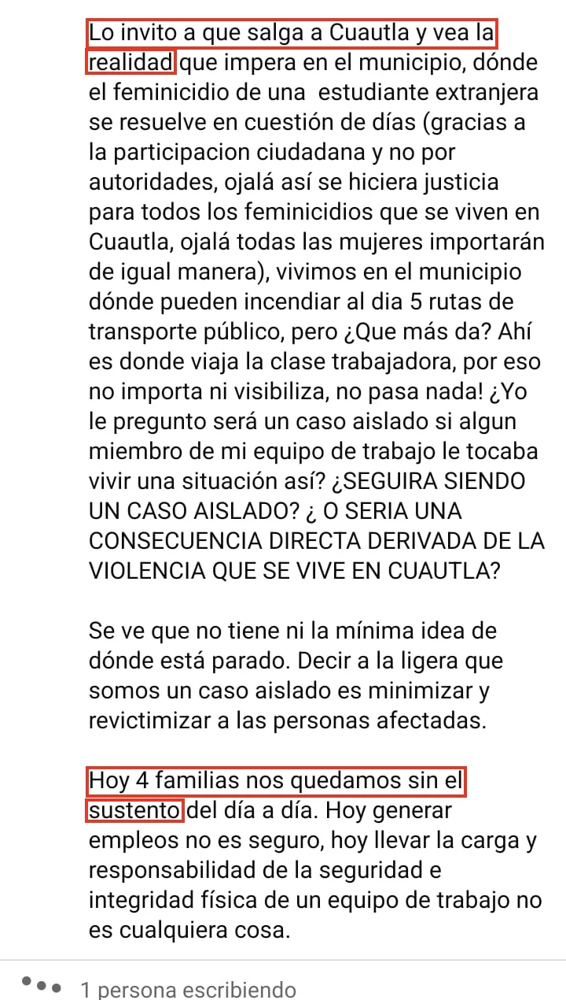
- Salvador Molina, declaración a medios, 9 de noviembre de 2026 (video en el archivo de 45 Digital Noticias; transcripción verificada).
- Comentario público de la dueña de La Hija de la Guayaba, 9 de noviembre de 2026 (capturas en el archivo de 45 Digital Noticias; foto y nombre se omiten).
- Noticias de Cuautla, "Cierra La Hija de la Guayaba tras siete años de operar en Cuautla", 8 de noviembre de 2026: noticiasdecuautla.mx/cierra-la-hija-de-la-guayaba-tras-siete-anos-de-operar-en-cuautla
- Diane Vaughan, The Challenger Launch Decision: Risky Technology, Culture, and Deviance at NASA, University of Chicago Press, 1996. ISBN 978-0-226-85176-1.
- INEGI, Directorio Estadístico Nacional de Unidades Económicas (DENUE), versiones de mayo de 2024 y abril de 2026: inegi.org.mx/app/mapa/denue
- INEGI, Censos Económicos 2019 y 2024, datos abiertos de Morelos: inegi.org.mx/contenidos/programas/ce/2019/Datosabiertos/ce2019_mor_csv.zip y inegi.org.mx/contenidos/programas/ce/2024/datosabiertos/conjunto_de_datos_ce_mor_2024_csv.zip
- CNBV, Bases de datos de inclusión financiera (infraestructura, terminales punto de venta), marzo de 2021 y marzo de 2026: gob.mx/cnbv/acciones-y-programas/bases-de-datos-de-inclusion-financiera
- IMSS, datos abiertos de asegurados y patrones por municipio, septiembre de 2024 y septiembre de 2026: datos.imss.gob.mx/group/asegurados
- Miguel Ángel Urrutia Lozano, entrevista con Milenio, 7 de agosto de 2025: youtube.com/watch?v=p6iJFEGF2Qs
- Noticias de Cuautla, "Solo cuatro cámaras de videovigilancia y seguridad sirven en Cuautla", 7 de agosto de 2025: noticiasdecuautla.mx/solo-cuatro-camaras-de-videovigilancia-y-seguridad-sirven-en-cuautla
- Ayuntamiento de Cuautla, Segundo Informe de Gobierno 2023, p. 17; cuentas públicas 2022 a 2025, presupuesto de egresos 2026 y estado del ejercicio de enero a marzo de 2026, portal de transparencia: cuautla.gob.mx/transparencia
- Noticias de Cuautla, "Inaugurarán Arcos de Seguridad en Cuautla el 11 de diciembre", 27 de noviembre de 2025: noticiasdecuautla.mx/inauguraran-arcos-de-seguridad-en-cuautla-el-11-de-diciembre
- Noticias de Cuautla, "Cuautla llegará a 500 cámaras de videovigilancia en este 2026", 9 de marzo de 2026: noticiasdecuautla.mx/cuautla-llegara-a-500-camaras-de-videovigilancia-en-este-2026
- Excélsior, "Se compromete Arredondo a reforzar seguridad en Cuautla", 21 de abril de 2024: excelsior.com.mx/nacional/se-compromete-arredondo-reforzar-seguridad-cuautla/1647714
- 45 Digital Noticias, "El inventario", 5 de septiembre de 2026: 45digitalnoticias.github.io/columnas/el-inventario.html
Las ligas van a la vista para que cualquiera compruebe por su cuenta. Si alguna dejó de resolver, escríbenos y la reponemos.
SRVO